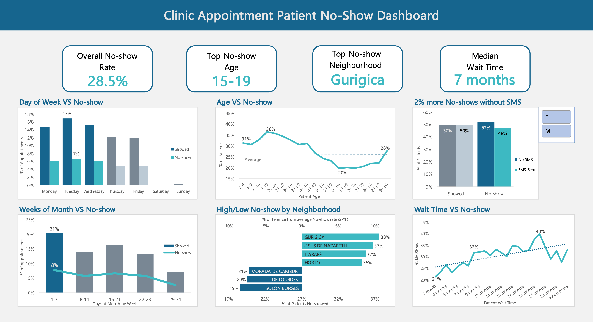

No-Show Dashboard
Patient No-shows come at the cost of clinics.
In the U.S., the annual cost of missed appointments is $150 billion.
This project uses Excel and Power Query on a dataset of over 110,500 medical appointments from Brazil to explore, analyze, visualize, and explain key causes for patient No-shows and methods for reducing it.
Objective
"What are the key factors driving patient no-shows, and how can the clinic reduce missed appointments by at least 15%?"
Key Findings
- Patients aged 15–19 are most likely to No-show
- SMS reminders show a statistically significant benefit to No-show rates
- Patients from Gurigica, Jesus De Nazareth, Itararé, or Horto are most likely to No-show
- Patients with longer Wait Times are more likely to No-show
- Beginning of the month and beginning of the week are the most busy, having the highest number of Appointments and No-shows
Recommendation & Expected Impact
The summation of my analysis brings 3 main fronts to reducing No-show rates:
- Age groups
- SMS messaging
- Neighborhood
My recommendation is to launch a “Show & Snack” pilot targeted at 15–19 year-olds by partnering with neighborhood eateries to promote appointment attendance. In conjunction, full integration of SMS messaging for all appointments to remind patients of their appointments. Finally, partnering with community organizations in the top No-showing Neighborhoods to provide transportation support.
- Pilot “Show & Snack” Incentive
- Description: Partner with local eateries to send digital $5 food coupons via SMS to 15–19 year-old patients upon attending their appointments
- Rationale: This age group has the highest No-show rate (34%) and most food-spending in Brazil for younger people is food related[2], SMS messages are a quick and effective way to distribute the coupons
- Expected Impact: Based on behavioral-contracting studies, a coupon incentive will help reduce No-show rates by an expected 13%[3,4], which means clinics will expect to fill an additional 2,660 appointment slots (or nearly 100 appt./day). In Brazil, a visit to a general practitioner is expected to cost on average $51 USD (BRL 120)[5], meaning $135,660 USD from newly attended appointments if effective
- Community-Organized Transportation Shuttle System
- Description: Partner with community organizations in the highest No-showing Neighborhoods to facilitate transportation support through a shuttle system that takes patients to the clinic from pick-up/drop-off areas. Information regarding shuttle times, pick-up zones, etc. can be communicated through SMS
- Rationale: Transportation is often recognized as a barrier of entry to healthcare access[6], the shuttle system will provides accessibility
- Expected Impact: Reduction of No-show rates in affected neighborhoods toward the average, expected 5-10% improvement based off Neighborhood vs No-show
- Priority Scheduling for High-Risk patients
- Description: Prioritize scheduling such that target high-No-show groups (15–19 year-olds, medical conditions, patients with previous No-shows, etc.) are less likely to miss their appointment
- Rationale: Analysis of Wait Time vs No-show gave insight that higher wait times lead to higher No-show rates
- Expected Impact: Priority scheduling for high-risk patients offsets some likelihood of patient No-shows, expected 5-10% improvement based on Wait Time vs No-show
- Standardized SMS Reminders
- Description: Standardize SMS reminder and confirmation messages for all appointments. Require patients to confirm or deny their planned attendance via SMS sent 1 day before their appointment
- Rationale: Analysis on SMS vs No-show indicated a positive relationship between sending an SMS reminder and patient attendance
- Expected Impact: Reduce No-show rates by at least 2%, resulting in 410 more appointments attended, or $20,910 USD from newly attended appointments
Conclusion
After the cleaning, exploration, analysis, and visualization, I proposed a No-show reduction plan based on discovered key factors that expects to answer the business question of reducing patient No-shows by at least 15% and saving an estimated $156,570 USD in recovered appointments. Below is a report that describes each step of the project and goes into more detail with chart analysis. Thank you for viewing my project.